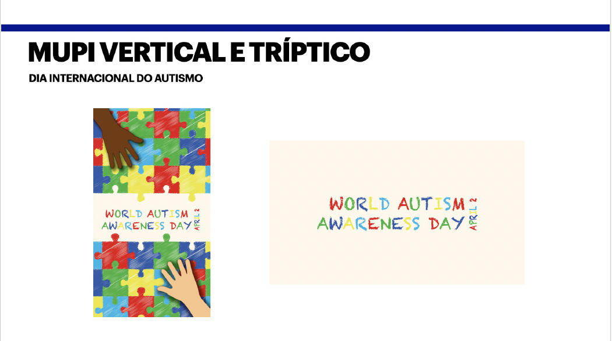
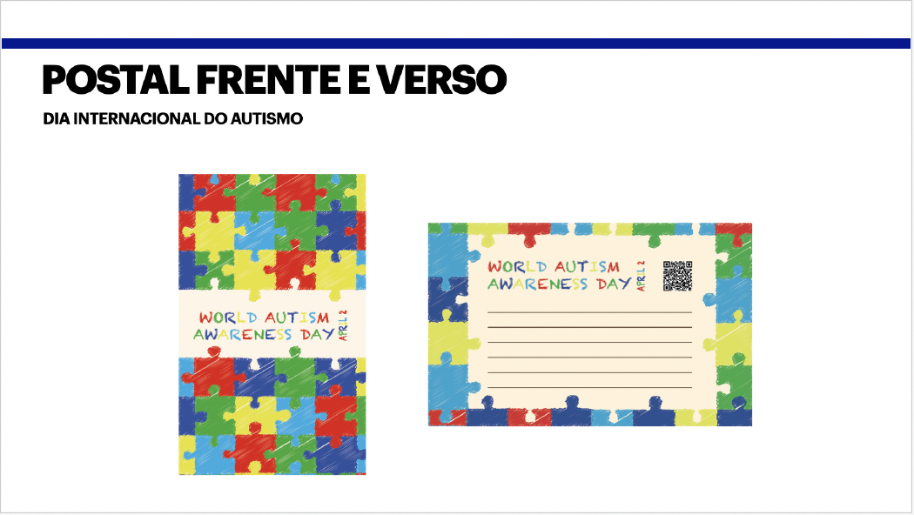
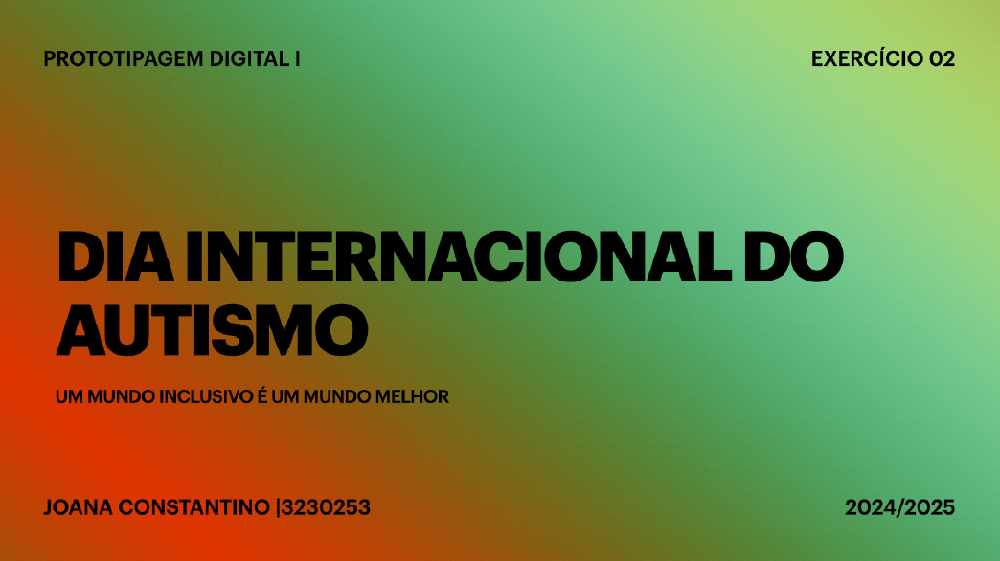

Autism Awareness Day
Concept
Autism Awareness Day is a visual campaign developed to promote awareness, inclusion and empathy. The project uses colour, contrast and graphic elements associated with diversity to communicate a positive and accessible message.
Keywords
Awareness, inclusion, diversity, empathy, communication, colour and understanding.
Visual Language
The campaign explores strong typography, bright colours and puzzle-inspired graphic elements to create a clear and expressive visual identity.
Purpose
The main purpose of the project is to create a visual message that encourages respect, visibility and a more inclusive way of looking at autism.


